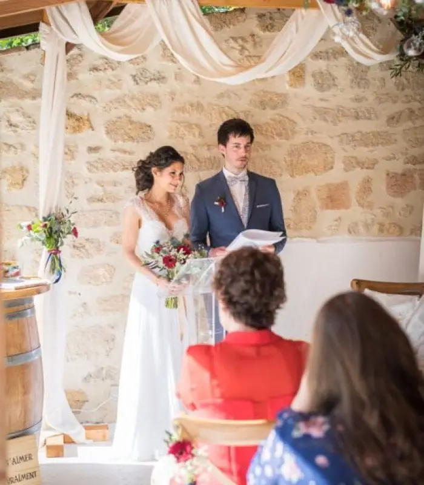
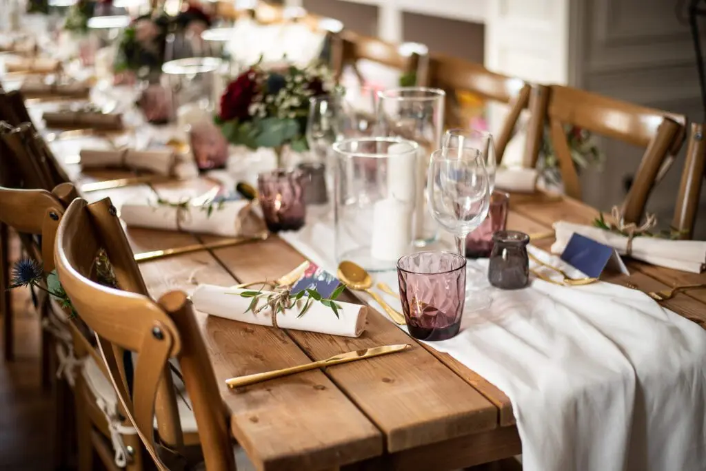

Mariage intimiste
Se marier en petit comité dans la région bordelaise est l’option choisie par les futurs mariés. Pourquoi cette idée ?
Le couple décide de s’unir suivant les envies à 2 et non plus par obligation culturelle. Vous donnez ainsi du sens à votre union et c’est l’occasion de se recentrer sur les choses les plus importantes pour vous.
Et, je travaille activement pour donner du sens au mariage pour vous permettre de réaliser un mariage à VOTRE image.
Pensez à vous et à vos envies pour choisir les personnes les plus importantes pour vous. Vous allez créer votre liste d’invités en toute simplicité et convivialité. Et où feriez-vous votre mariage ?
Un jardin familial ou une maison louée pour l’occasion sera l’espace idéal car vous serez heureux et détendus et vos proches le seront aussi.
Notez vos priorités, cela permettra également de prévoir votre budget au bon endroit. Pour faire plaisir à vos invités et vivre un mariage unique, pensez à une cérémonie sur-mesure !



Ce qui sera essentiel de votre mariage en petit comité, c’est de profiter des personnes qui vont sont chères. Profitez-en pour faire des activités pour fédérer vos proches et donner une ambiance très festive.
Qu’en pensez-vous une sortie en bateau sur le bassin d’Arcachon ? Une activité où vous réaliserez vos cocktails, un cours de cuisine, ou encore la création de votre parfum signature ? Votre journée sera plus qu’un mariage mais un évènement d’une vie.

J’ai eu l’occasion d’organiser des petits mariages et les activités sont plus funs, un dîner encore plus raffiné et des lieux uniques.
Si vous avez envie de ces instants magiques mais que vous manquez de temps ou même de créativité, j’offre une formule toute incluse pour vous accompagner sur les préparatifs à Bordeaux. Je vous embarque vous et vos invités pour une destination surprise et ainsi organiser ces instants de façon à ce que vous soyez dans une bulle mariage unique !
Lovely Day Event c'est plusieurs types de prestations
L'organisation de mariage
Je vais intervenir sur toutes les étapes de vos préparatifs et vous guider dans vos choix. Je suis force de proposition pour que votre mariage ne ressemble qu’à vous.
Décoration de mariage
Créative et passionnée, je suis certifiée Wedding Designer et je conçois une ambiance scénographique qui correspond au thème de votre mariage.
Coordination le jour J
Je serai le chef d’orchestre pour gérer les différents prestataires, la mise en place de votre décoration et le déroulement de cette belle journée.